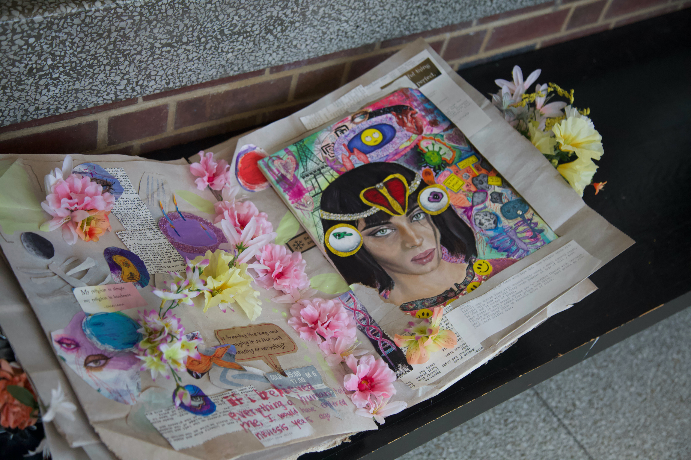

Our human-centered pespective on the world in not only dangerous to the well-being of other species,it is also idiotic. We are recent products of extensive microscopic evolution. We are not the end all be all.
Maybe every once in a while we should celebrate the existence of bacteria and deep time for allowing us to develop into the multilineage organisms we are today.
